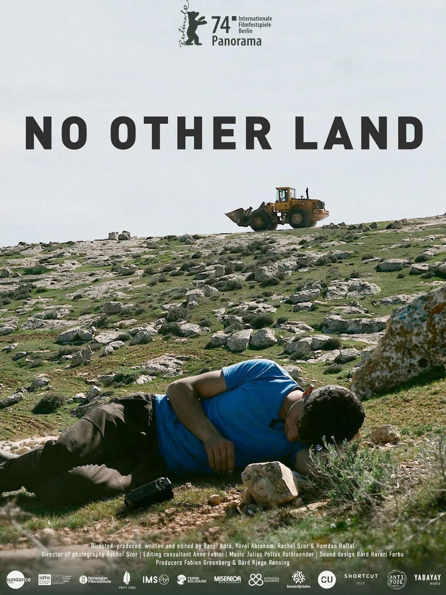

Clicca su una delle copertine per visualizzare le informazioni sul libro o sul film.
Romanzo che racconta la storia di una famiglia palestinese attraverso più generazioni, mostrando l’impatto della guerra, dell’esilio e della perdita sulla memoria e sull’identità familiare.
Saggio che analizza alcune scelte politiche e storiche di Israele, riflettendo sulle loro conseguenze interne e internazionali nel contesto del conflitto mediorientale.
Romanzo che usa oggetti, simboli e vicende personali per riflettere su identità culturale, memoria, religione e rapporti tra popoli segnati dal conflitto.
Graphic novel storica basata su testimonianze e ricostruzioni giornalistiche, che racconta eventi reali della guerra e la vita dei civili nella Striscia di Gaza.
Film che ricostruisce la vicenda reale di Hind Rajab e mostra, attraverso una storia personale, la dimensione umana e civile della guerra a Gaza.

Documentario che segue la vita quotidiana nei territori occupati, mostrando demolizioni, resistenza civile e conseguenze concrete del conflitto sulle comunità locali.